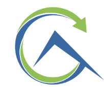
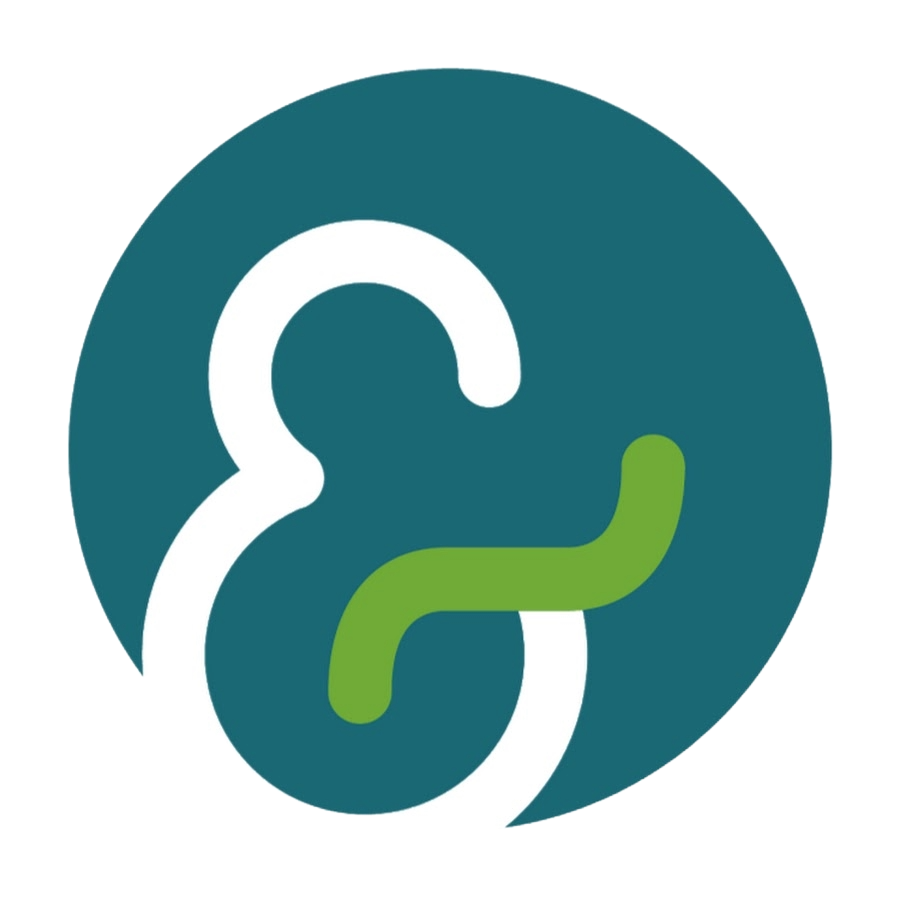

Explore My Professional
Employment

Glimm Analytics
Quantitative Trading Intern
Spring 2026
- Developed ensemble GARCH-LSTM model on intraday volatility; reduced mean squared error by 24% vs GARCH
- Engineered Deep Q-Network (DQN) trading agent using ensemble GARCH-LSTM volatility forecasts and proprietary features, achieving 2.6 Sharpe ratio on backtested intraday regime-switching strategies
- Reduced model epoch training time by 95% by implementing convex optimization and vectorized PyTorch pipelines

EY-Parthenon
Winter AI Intern
Winter 2025
- Designed multi-agent LLM system with orchestrator and sub-agents to support due diligence workflows.
- Built vectorized retrieval system for structured reasoning traces, reducing reliance on RLHF/SFT by improving reasoning efficiency.
Seton Hill University
Database Engineer Intern
Summer 2025
- Designed and deployed a normalized SQL Server database utilizing SQLAlchemy and live website API calls to develop a real-time tracking system for 10,000+ student engagement records.
- Optimized data retrieval by generating complex SQL queries featuring CTEs, multi-level joins, and subqueries to build high-performance reporting views.
- Integrated database with Apache Superset to develop live, interactive dashboards for participation analysis.

CMMB
Data Analyst Intern
Sept 2024 – Mar 2025
- Developed donor segmentation models using clustering algorithms and statistical analysis in Python.
- Calculated Customer Lifetime Value (CLV) and retention rates to optimize fundraising strategy and donation stream forecasting.
- Conducted an extensive data quality audit of 1M+ records, identifying and resolving 50k+ data integrity errors within a normalized database.